ASI KARIKAS ON VÕISTKONDLIK PROGRAMMEERIMISVÕISTLUS KOOLIÕPILASTELE
Tegemist on programmeerimisvõistlusega
Võistlust korraldavad Tallinna Tehnikaülikooli Arvutisüsteemide Instituut ning tudengite organisatsioon tarkvaraarenduse klubi MTÜ Lapikud.
Võistlus jaguneb kaheks vooruks:
Koduvoor toimub sul kodus. Lahendamiseks on antud kaks ülesannet. Lahendada tuleb vähemalt üks. Lahenda rahulikult enda tempos. Selleks, et end võistlusesse kirja panna REGISTREERI end siin. Nii saame sulle vajaliku info ja kuupäevad kiiresti edastada. Lisa sinna ka link enda gihtubi, kuhu sa lahendatud ülesanded paned. Juhul kui ei jõu ära teha kõik, siis saame tehtud töö hinnata.
Lõppvooru kutsume 2 parimat kuni 4-liikmelist võistkonda
(soovi korral juhendajaga).
Anname lahendamiseks ühe ülesande. Lahendamiseks on 4 h. Koodi
esitamisel peab olema ka README fail, milles on märgitud esitaja kool ja tiimi liikmete nimed.